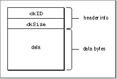
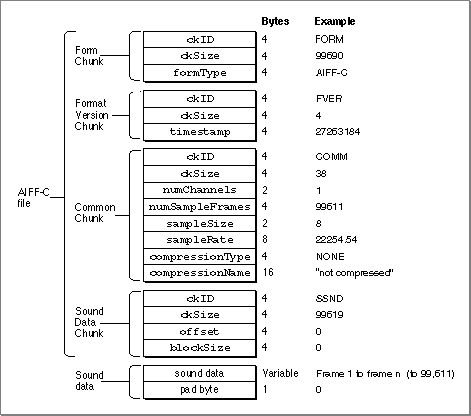

Important: Inside Macintosh: Sound is deprecated as of Mac OS X v10.5. For new audio development in Mac OS X, use Core Audio. See the Audio page in the ADC Reference Library.
Sound Files
This section describes in detail the structure of AIFF and AIFF-C files. Both of these types of sound files are collections of chunks that define characteristics of the sampled sound or other relevant data about the sound.
Currently, the AIFF and AIFF-C specifications include the following chunk types.
- Note
- Most applications only need to read AIFF and AIFF-C files or to record sampled-sound data directly to them. You can both play and record AIFF and AIFF-C files without knowing the details of the AIFF and AIFF-C file formats, as explained in the chapter "Introduction to Sound on the Macintosh" in this book. Thus, the information in this section is for advanced programmers only.

The following sections document the four principal kinds of chunks that can occur in AIFF and AIFF-C files.
Chunk Organization and Data Types
An AIFF or AIFF-C file contains several different types of chunks. For example, there is a Common Chunk that specifies important parameters of the sampled sound, such as its size and sample rate. There is also a Sound Data Chunk that contains the actual audio samples. A chunk consists of some header information followed by some data. The header information consists of a chunk ID number and a number that indicates the size of the chunk data. In general, therefore, a chunk has the structure shown in Figure 2-6.Figure 2-6 The general structure of a chunk

The header information of a chunk has this structure:
TYPE ChunkHeader = RECORD ckID: ID; {chunk type ID} ckSize: LongInt; {number of bytes of data} END;TheckIDfield specifies the chunk type. An ID is a 32-bit concatenation of any four printable ASCII characters in the range' '(space character, ASCII value $20) through'~'(ASCII value $7E). Spaces cannot precede printing characters, but trailing spaces are allowed. Control characters are not allowed. You can specify values for the four types of chunks described later by using these constants:
CONST FormID = 'FORM'; {ID for Form Chunk} FormatVersionID = 'FVER'; {ID for Format Version Chunk} CommonID = 'COMM'; {ID for Common Chunk} SoundDataID = 'SSND'; {ID for Sound Data Chunk}TheckSizefield specifies the size of the data portion of a chunk and does not include the length of the chunk header information.The Form Chunk
The chunks that define the characteristics of a sampled sound and that contain the actual sound data are grouped together into a container chunk, known as the Form Chunk. The Form Chunk defines the type and size of the file and holds all remaining chunks in the file. The chunk ID for this container chunk is'FORM'.A chunk of type
'FORM'has this structure:
TYPE ContainerChunk = RECORD ckID: ID; {'FORM'} ckSize: LongInt; {number of bytes of data} formType: ID; {type of file} END;For a Form Chunk, theckSizefield contains the size of the data portion of this chunk. Note that the data portion of a Form Chunk is divided into two parts,formTypeand the rest of the chunks of the file, which follow theformTypefield. These chunks are called local chunks because their chunk IDs are local to the Form Chunk.The local chunks can occur in any order in a sound file. As a result, your application should be designed to get a local chunk, identify it, and then process it without making any assumptions about what kind of chunk it is based on its order in the Form Chunk.
The
formTypefield of the Form Chunk specifies the format of the file. For AIFF files,formTypeis'AIFF'. For AIFF-C files,formTypeis'AIFC'. Note that this type might not be the same as the operating-system type with which the File Manager identifies the file. In particular, a file of operating-system type'AIFC'might be formatted as an AIFF file.The Format Version Chunk
One difference between the AIFF and AIFF-C file formats is that files of type AIFF-C contain a Format Version Chunk and files of type AIFF do not. The Format Version Chunk contains atimestampfield that indicates when the format version of this AIFF-C file was defined. This in turn indicates what format rules this file conforms to and allows you to ensure that your application can handle a particular AIFF-C file. Every AIFF-C file must contain one and only one Format Version Chunk.In AIFF-C files, a Format Version Chunk has this structure:
TYPE FormatVersionChunk = RECORD ckID: ID; {'FVER'} ckSize: LongInt; {4} timestamp: LongInt; {date of format version} END;The
- Note
- In AIFF files, there is no Format Version Chunk.
timestampfield indicates when the format version for this kind of file was created. The value indicates the number of seconds since January 1, 1904, following the normal time conventions used by the Macintosh Operating System. (See the chapter on date and time utilities in Inside Macintosh: Operating System Utilities for several routines that allow you to manipulate time stamps.)You should not confuse the format version time stamp with the creation date of the file. The format version time stamp indicates the time of creation of the version of the format according to which this file is structured. Because Apple defines the formats of AIFF-C files, only Apple can change this value. The current version is defined by a constant:
CONST AIFCVersion1 = $A2805140; {May 23, 1990, 2:40 p.m.}The Common Chunk
Every AIFF and AIFF-C file must contain a Common Chunk that defines some fundamental characteristics of the sampled sound contained in the file. Note that the format of the Common Chunk is different for AIFF and AIFF-C files. As a result, you need to determine the type of file format (by inspecting theformTypefield of the Form Chunk) before reading the Common Chunk.For AIFF files, the Common Chunk has this structure:
TYPE CommonChunk = RECORD ckID: ID; {'COMM'} ckSize: LongInt; {size of chunk data} numChannels: Integer; {number of channels} numSampleFrames: LongInt; {number of sample frames} sampleSize: Integer; {number of bits per sample} sampleRate: Extended; {number of frames per second} END;For AIFF-C files, the Common Chunk has this structure:
TYPE ExtCommonChunk = RECORD ckID: ID; {'COMM'} ckSize: LongInt; {size of chunk data} numChannels: Integer; {number of channels} numSampleFrames: LongInt; {number of sample frames} sampleSize: Integer; {number of bits per sample} sampleRate: Extended; {number of frames per second} compressionType: ID; {compression type ID} compressionName: PACKED ARRAY[0..0] OF Byte; {compression type name} END;The fields that exist in both types of Common Chunk have the following meanings:The
numChannelsfield of both types of Common Chunk indicate the number of audio channels contained in the sampled sound. A value of 1 indicates monophonic sound, a value of 2 indicates stereo sound, a value of 4 indicates four-channel sound, and so forth. Any number of audio channels may be specified. The actual sound data is stored elsewhere, in the Sound Data Chunk.The
numSampleFramesfield indicates the number of sample frames in the Sound Data Chunk. Note that this field contains the number of sample frames, not the number of bytes of data and not the number of sample points. For noncompressed sound data, the total number of sample points in the file isnumChannels*numSampleFrames. (For more information on sample points, see "Sampled-Sound Data" on page 2-9.)The
sampleSizefield indicates the number of bits in each sample point of noncompressed sound. Although the field can contain any integer from 1 to 32, the Sound Manager currently supports only 8- and 16-bit sound. For compressed sound data, this field indicates the number of bits per sample in the original sound data, before compression.The
sampleRatefield contains the sample rate at which the sound is to be played back, in sample frames per second. For a list of common sample rates, see Table 2-1 on page 2-16.An AIFF-C Common Chunk includes two fields that describe the type of compression (if any) used on the audio data. The
compressionTypefield contains the type of the compression algorithm, if any, used on the sound data. Here are the currently available compression types and their associated compression names:
CONST {compression types} NoneType = 'NONE'; ACE2Type = 'ACE2'; ACE8Type = 'ACE8'; MACE3Type = 'MAC3'; MACE6Type = 'MAC6';You can define your own compression types, but you should register them with Apple.Finally, the
compressionNamefield contains a human-readable name for the compression algorithm ID specified in thecompressionTypefield. Compression names for Apple-supplied codecs are defined by constants:
CONST {compression names} NoneName = 'not compressed'; ACE2to1Name = 'ACE 2-to-1'; ACE8to3Name = 'ACE 8-to-3'; MACE3to1Name = 'MACE 3-to-1'; MACE6to1Name = 'MACE 6-to-1';This string is useful when putting up alert boxes (perhaps because a necessary decompression routine is missing). Pad the end of this array with a byte having the value 0 if the length of this array is not an even number (but do not include the pad byte in the count).The Sound Data Chunk
The Sound Data Chunk contains the actual sample frames that make up the sampled sound. The Sound Data Chunk has this structure:
TYPE SoundDataChunk = RECORD ckID: ID; {'SSND'} ckSize: LongInt; {size of chunk data} offset: LongInt; {offset to sound data} blockSize: LongInt; {size of alignment blocks} END;Theoffsetfield indicates an offset (in bytes) to the beginning of the first sample frame in the chunk data. Most applications do not need to use theoffsetfield and should set it to 0.The
blockSizefield contains the size (in bytes) of the blocks to which the sound data is aligned. This field is used in conjunction with theoffsetfield for aligning sound data to blocks. As with theoffsetfield, most applications do not need to use theblockSizefield and should set it to 0.The sampled-sound data follows the
blockSizefield. For information on the format of sampled-sound data, see "Sampled-Sound Data" on page 2-9.
- Note
- The Sound Data Chunk is required unless the
numSampleFramesfield in the Common Chunk is 0. A maximum of one Sound Data Chunk can appear in an AIFF or AIFF-C file.Format of Entire Sound Files
Figure 2-7 illustrates an AIFF-C file that contains approximately 4.476 seconds of 8-bit monophonic sound data sampled at 22 kHz. The sound data is not compressed. Note that the number of sample frames in this example is odd, forcing a pad byte to be inserted after the sound data. This pad byte is not reflected in theckSizefield of the Sound Data Chunk, which means that special processing is required to correctly determine the actual chunk size.On a Macintosh computer, the Form Chunk (and hence all the other chunks in an AIFF or AIFF-C file) is stored in the data fork of the file. The file type of an AIFF format file is
'AIFF', and the file type of an AIFF-C format file is'AIFC'. Macintosh applications should not store any information in the resource fork of an AIFF or AIFF-C file because that information might not be preserved by other applications that edit sound files.Figure 2-7 A sample AIFF-C file

Every Form Chunk must contain a Common Chunk, and every AIFF-C file must contain a Format Version Chunk. In addition, if the sampled sound has a length greater than 0, there must be a Sound Data Chunk in the Form Chunk. All other chunk types are optional. Your application should be able to read all the required chunks if it uses AIFF or AIFF-C files, but it can choose to ignore any of the optional chunks.
When reading AIFF or AIFF-C files, you should keep the following points in mind:
- Remember that the local chunks in an AIFF or AIFF-C file can occur in any order. An application that reads these types of files should be designed to get a chunk, identify it, and then process it without making any assumptions about what kind of chunk it is based on its order.
- If your application allows modification of a chunk, then it must also update other chunks that might be based on the modified chunk. However, if there are chunks in the file that your application does not recognize, you must discard those unrecognized chunks. Of course, if your application is simply copying the AIFF or AIFF-C file without any modification, you should copy the unrecognized chunks, too.
- You can get the clearest indication of the number of sample frames contained in an AIFF or AIFF-C file from the
numSampleFramesparameter in the Common Chunk, not from theckSizeparameter in the Sound Data Chunk. TheckSizeparameter is padded to include the fields that follow it, but it does not include the byte with a value of 0 at the end if the total number of sound data bytes is odd.- Remember that each chunk must contain an even number of bytes. Chunks whose total contents would yield an odd number of bytes must have a pad byte with a value of 0 added at the end of the chunk. This pad byte is not included in the
ckSizefield.- Remember that the
ckSizefield of any chunk does not include the first 8 bytes of the chunk (which specify the chunk type).